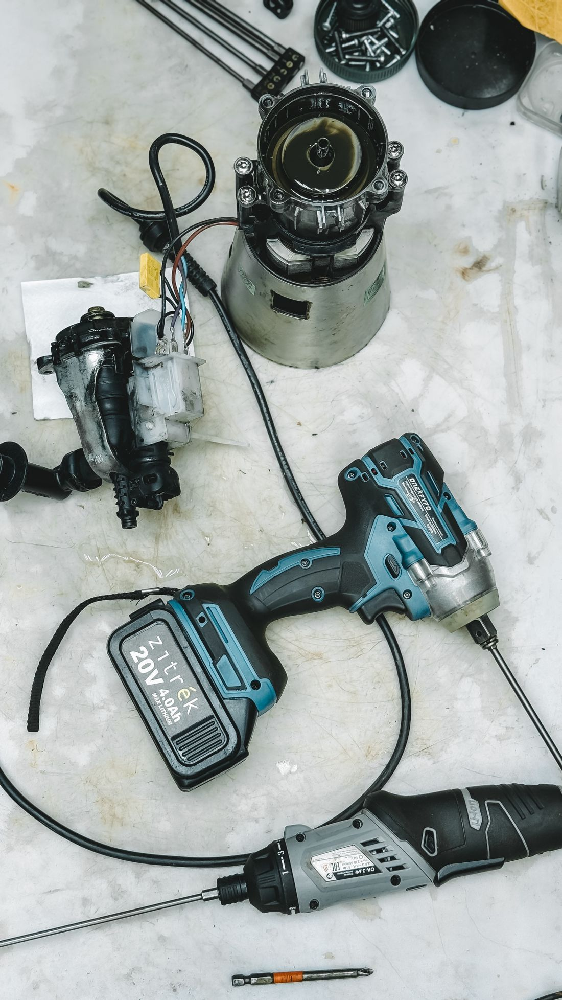
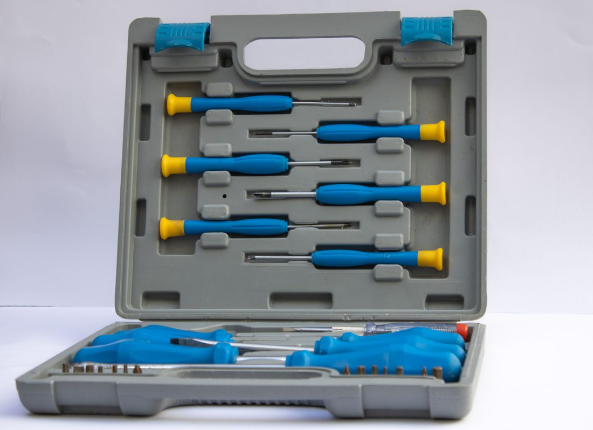

Geladeira
Pedido de avaliação, sem diagnóstico remoto.
Selecionar ↗Conte qual é o aparelho, seu bairro e o turno que prefere. Um pedido claro é o primeiro passo para conversar sobre uma visita de avaliação.
Começar meu pedido ↗
Não dá para diagnosticar à distância com uma pergunta. Aqui você organiza informações básicas para iniciar uma conversa — sem preço, prazo ou reparo prometido.
Pedido de avaliação, sem diagnóstico remoto.
Selecionar ↗Pedido de avaliação, sem promessa de reparo.
Selecionar ↗Pedido de avaliação, sem preço estimado.
Selecionar ↗Uma visita de avaliação ajuda a entender o aparelho. A fotografia ilustra ferramentas genéricas e não mostra uma equipe ou material do serviço fictício.
Descrever meu aparelho ↗
Três respostas preparam uma mensagem para conversar sobre avaliação. Não pedimos endereço completo nem dados do aparelho nesta prévia.
Demonstração fictícia. Serviço e contato são exemplos; nenhuma visita será agendada.